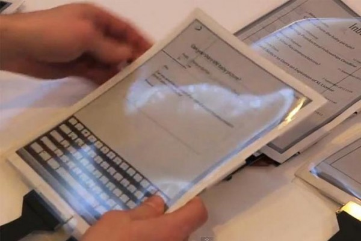

Bekerja sama dengan Intel, Plastic Logic dan Universitas Queen merilis tablet tipis itu yang dinamakan papertab. Sesuai dengan namanya, Papertab merupakan tablet PC fleksibel terbuat dari plastik yang kalo diliat mirip banget seperti kertas biasa.
Tablet berlayar sentuh fleksibel 10,7 inci ini didukung oleh prosesor Intel Core i5 generasi kedua. Papertab dirancang sedemikian rupa sehingga kalian akan memiliki onePapertab untuk setiap aplikasi yang digunakan. Hal itu sendiri memungkinkan
tablet ini berinteraksi satu sama lain secara nirkabel.

Kalau mau membutuhkan media lebih besar, kalian bisa mendekatkan Papertab satu dengan lainnya secara bersampingan. Sembari menekuk salah satu sisi layar, kalian bisa menavigasinya seperti halaman di majalah tanpa harus menekan tombol.
Namun, belum ada informasi lebih jauh ini soal Papertab ini termasuk akan diproduksi secara massal dan harga jualnya berapa. Tapi, kalo kalian mau tau soal kecanggihannya lebih jauh, kalian bisa kok liat videonya di bawah ini.
Klik Disini